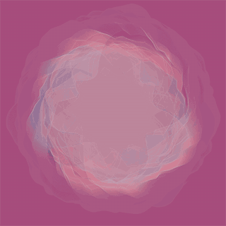
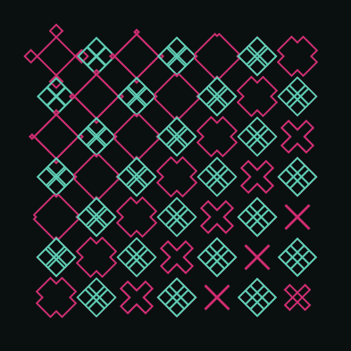
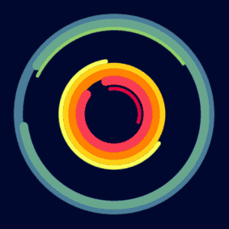
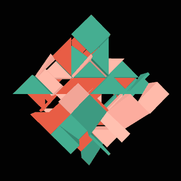
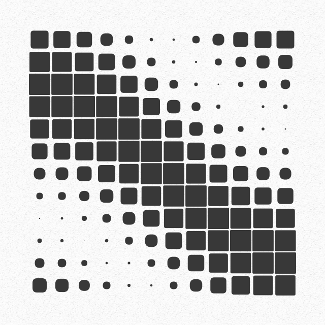
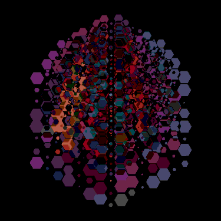

Generatief kunstwerk






In de eindopdracht ga je een algoritme schrijven om een eigen generatief kunstwerk te creëren, waarin je een aantal vershillende technieken die je deze cursus geleerd hebt gaat toepassen en proberen te combineren. De voorbeelden hierboven dienen alleen ter inspiratie. Je sketch moet in ieder geval een mate van willekeur bevatten waardoor het er iedere keer iets anders uitziet. Daarnaast is het de bedoeling dat je een vorm van animatie en/of interactie toepast in je werk. Je stelt bovendien een aantal regels op waaraan je programma zich moet houden. Je maakt de opdracht weer in de p5 editor.
Regels
Welke regels ga je opstellen? Dat mag je helemaal zelf weten, maar je gebruikt minimaal 3 regels voor je algoritme. De regels voor je algoritme voeg je als comments toe boven je code in de editor. Hieronder een aantal suggesties:
- Compositie
- Maak je gebruik van een regelmatig grid of wordt je compositie meer chaotisch? Of doe je beide, bijv. links regelmatig, naar rechts toe steeds onregelmatiger.
- Moet je compositie op sommige plekken drukker ogen dan op ander plekken?
- Gebruik je veel verschillende vormen en kleuren of juist heel weinig?
- Vormen
- Gebruik je standaard vormen, ga je speciale vormen maken om te gebruiken?
- Mag je bepaalde vormen niet gebruiken, of moeten bepaalde vormen vaker voorkomen dan andere? Moeten sommige vormen groter getekend worden dan andere?
- Maak je het type vorm afhankelijk van de plaats in je compositie, bijv. bovenin meer cirkels, onderin meer vierkanten?
- Mogen vormen overlappen of moet er juist ruimte zitten tussen vormen?
- Kleuren
- Gebruik je één of meer kleurenpaletten in je compositie, gebruik je willekeurige kleuren?
- Maak je gebruik van vulkleuren en/of lijnkleuren, en is de lijnkleur bijv. afhankelijk van de vulkleur?
- Sluit je bepaalde kleuren uit of gebruik je bijv. alleen pasteltinten of juist alleen harde kleuren?
- Is de kleur afhankelijk van de plaats in je compositie, bijv. in het midden meer geeltinten, aan de randen meer blauw?
- Gebruik je transparante kleuren, laat je kleuren overlappen om zo nieuwe kleuren te genereren?
- Animatie
- Beweegt je compositie vloeiend en subtiel of is de animatie juist wild en chaotisch?
- Welke eigenschappen van je vormen ga je animeren? Denk aan grootte, positie, rotatie, kleuren etc.
- Animeer je meerdere eigenschappen van je vormen, of beperk je het tot bijv. alleen de kleuren?
- Interactie
- Heeft de gebruiker veel of weinig invloed op je compositie?
- Welke eigenschappen van je vormen ga je interactief maken? Denk aan grootte, positie, rotatie, kleuren etc.
- Maak je meerdere eigenschappen interactief of slechts enkele?
Tips
Denk eraan dat het handig is om met een array van objecten te werken als je meerdere vormen wilt animeren en/of interactief wilt maken.
Denk aan het gebruik van translate(), push() en pop() als je bijv. elementen wilt roteren of schalen.
Beoordeling
Waaraan moet je werk voldoen?
- Je schrijft een werkend algoritme, dwz. je code functioneert en je sketch moet iets laten zien.
- Je sketch bevat de regels waaraan je algoritme zich houdt, genoteerd in comments.
- Je sketch maakt gebruik van variabelen.
- Je sketch maakt gebruik van for en/of while loops voor herhalingsopdrachten.
- Je sketch maakt gebruik van random en/of noise functies om een mate van willekeur in te bouwen.
- Je sketch maakt gebruik van arrays en objecten.
- Je sketch bevat een vorm van animatie en/of interactie.
- Je code is leesbaar, goed gestructureerd en efficiënt.
Je cijfer is als volgt opgebouwd:
| percentage | onderdelen |
|---|---|
| 10% | Gratis. |
| 5% | Sketch maakt goed gebruik van variabelen. |
| 10% | Sketch maakt goed gebruik van loops. |
| 15% | Sketch maakt goed gebruik van willekeur waardoor de output er telkens anders uitziet. |
| 5% | Sketch maakt gebruik van arrays. |
| 5% | Sketch maakt gebruik van objecten. |
| 10% | Vorm- en kleurgebruik in sketch leveren aantrekkelijke, wisselende composities op. |
| 15% | Sketch bevat animatie en/of interactie. |
| 15% | Code is leesbaar, goed gestructureerd en efficiënt. |
| 5% | Sketch bevat de regels waaraan je algoritme zich houdt, genoteerd in comments bovenaan je code. |
| 5% | Sketch bevat comments boven blokjes code waarin kort en bondig staat genoteerd wat dat stukje code uitvoert. |
Hoe moeilijker je code is, maar ook hoe creatiever, verrassender en interactiever, hoe hoger je cijfer. Je kunt altijd info opzoeken op de referentiepagina van p5.js. Ook mag je gebruik maken van eerder gemaakte sketches, voorbeelden uit de lessen en de voorbeelden op de p5.js examples pagina. Je mag stukken code kopiëren en aanpassen of alleen gebruiken voor inspiratie. Creativiteit wordt beloond dus leef je uit.
Inleveren
In het File menu van de webeditor, selecteer je Share. Kies Edit en deel de link met je docent.